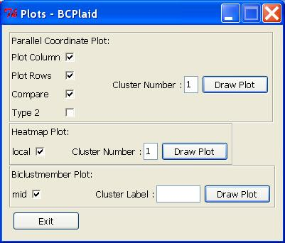
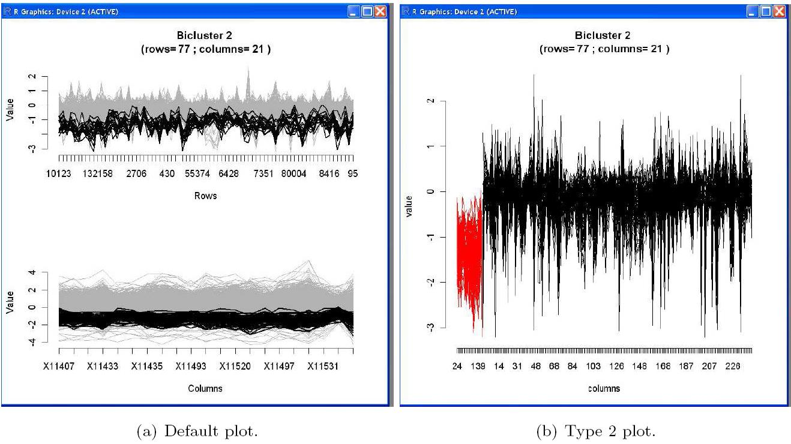
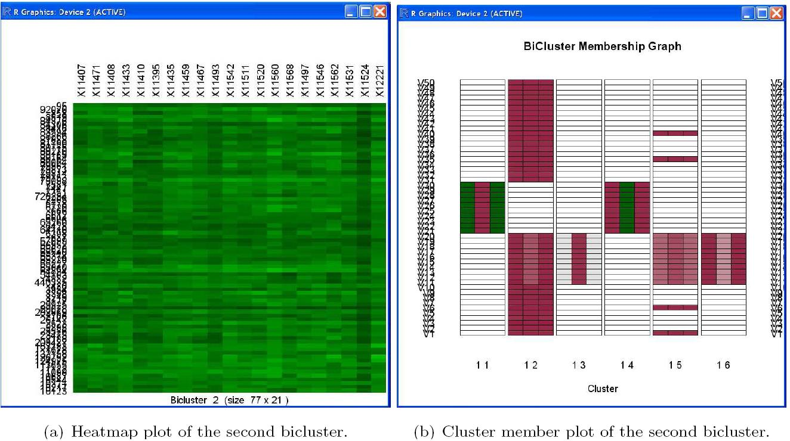

Graphical Displays
In the Plots dialog box, several plots from the biclust package are available:

• Parallel Coordinate Plot.
- Plot Columns: If this option is checked, the columns profiles will be drawn. Each line represents one of the columns in the specified bicluster.
- Plot Rows: To draw the row profiles. Each line represents one of the row in the specified bicluster. If both plot column and row options are selected, parallel coordinate plots of rows (genes) and columns (conditions) will be drawn one below the other.
- Compare: Values of the complete data matrix will be considered and drawn as shaded lines.
- Type 2: The Parallel Coordinates of rows (genes) will be drawn. The red lines are the specified bicluster and the black lines are the same genes but the columns are outside the specified bicluster.

• Heatmap Plot.
In the heatmap plot the rows and columns reordered so the rows and columns of the input bicluster will be at top-left of the matrix. The
heatmap also can be plotted only for the given bicluster.

• Biclustmember Plot.
In the Biclustmember Plot a membership graph of the specified bicluster is drawn. The cluster member plot can be used to compare
the bicluster to each other or to a normal cluster result. Each bicluster is represented as a bar of stacked rectangles and each rectangle represents a column in the data set (Kaiser, 2011). If a bicluster contains a variable, the corresponding rectangle is coloured, which represents the mean
value of this variable for all the objects within the bicluster. Depending on the variable mid, the rectangle contains the global mean value for this variable in the middle (mid option checked) or on the right half (mid option is not checked).